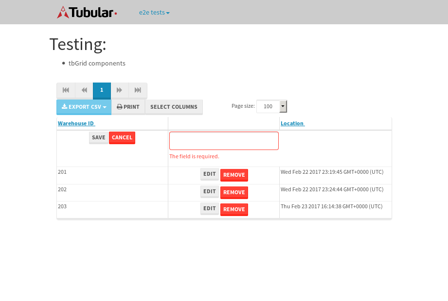

tbColumn.Grid Sorting - 32.31sTests: 5Skipped: 0Failures: 0 should sort data in ascending order then on descending order when sorting by Order Id column - 11.796sTests passed: 100.00%should order data in ascending order when click-sorting an unsorted text column - 4.781sTests passed: 100.00%should order data in descending order when click-sorting an ascending-sorted text column - 5.431sTests passed: 100.00%should order data in ascending order when click-sorting an unsorted date column - 4.888sTests passed: 100.00%should order data in descending order when click-sorting twice an unsorted date column - 5.41sTests passed: 100.00%
tbEmptyForm - 3.554sTests: 3Skipped: 0Failures: 0 should have an empty required field - 0.999sTests passed: 100.00%should not be able to click on save - 0.496sTests passed: 100.00%should load default value for numeric field - 0.468sTests passed: 100.00%
Tubular Filters.tbColumnFilter - 105.758sTests: 12Skipped: 0Failures: 0 should cancel filtering when clicking outside filter-popover - 8.561sTests passed: 100.00%should disable Value text-input for "None" filter - 6.932sTests passed: 100.00%should disable apply button for "None" filter - 6.598sTests passed: 100.00%should decorate popover button when showing data is being filtered for its column - 12.458sTests passed: 100.00%should correctly filter data for the "Equals" filtering option - 8.342sTests passed: 100.00%should correctly filter data for the "Not Equals" filtering option - 7.928sTests passed: 100.00%should correctly filter data for the "Contains" filtering option - 7.99sTests passed: 100.00%should correctly filter data for the "Not Contains" filtering option - 8.466sTests passed: 100.00%should correctly filter data for the "Starts With" filtering option - 7.22sTests passed: 100.00%should correctly filter data for the "Not Starts With" filtering option - 6.652sTests passed: 100.00%should correctly filter data for the "Ends With" filtering option - 6.821sTests passed: 100.00%should correctly filter data for the "Not Ends With" filtering option - 6.75sTests passed: 100.00%
Tubular Filters.tbColumnDateTimeFilter - 133.522sTests: 12Skipped: 0Failures: 0 should cancel filtering when clicking outside filter-popover - 7.25sTests passed: 100.00%should disable Value text-input for "None" filter - 6.698sTests passed: 100.00%should disable apply button for "None" filter - 7.057sTests passed: 100.00%should clear filtering when clicking on Clean button - 17.395sTests passed: 100.00%should decorate popover button when showing data is being filtered for its column - 11.8sTests passed: 100.00%should correctly filter data for the "Equals" filtering option - 6.748sTests passed: 100.00%should correctly filter data for the "Not Equals" filtering option - 6.87sTests passed: 100.00%should correctly filter data for the "Between" filtering option - 11.979sTests passed: 100.00%should correctly filter data for the "Greater-or-equal" filtering option - 11.706sTests passed: 100.00%should corretlly filter data for the "Greater" filtering option - 11.853sTests passed: 100.00%should correctly filter data for the "Less-or-equal" filtering option - 11.782sTests passed: 100.00%should correctly filter data for the "Less" filtering option - 11.565sTests passed: 100.00%
Tubular Filters.tbColumnOptionsFilter - 80.51sTests: 3Skipped: 0Failures: 0 should cancel filtering when clicking outside filter-popover - 8.144sTests passed: 100.00%should decorate popover button when showing data is being filtered for its column - 11.888sTests passed: 100.00%should filter column-elements in accordance to the selected filter when selecting a single option - 49.374sTests passed: 100.00%
Tubular Filters.tbTextSearch - 48.376sTests: 5Skipped: 0Failures: 0 min-chars is not set - 1.08sTests passed: 100.00%should filter data in searchable-column customer name to matching inputted text, starting from 3 characters - 6.827sTests passed: 100.00%should filter data in searchable-column shipper city to matching inputted text, starting from 3 characters - 12.135sTests passed: 100.00%should show clear button when there is inputted text only - 6.421sTests passed: 100.00%should clear filtering when clicking clear button - 16.183sTests passed: 100.00%
tbForm related components.tbCheckboxField - 7.967sTests: 2Skipped: 0Failures: 0 should save changes on "SAVE" - 3.937sTests passed: 100.00%should discard changes on "CANCEL" - 2.464sTests passed: 100.00%
tbForm related components.tbDropDownEditor - 10.98sTests: 5Skipped: 0Failures: 0 should set initial input value to the value of "value" attribute when defined - 1.755sTests passed: 100.00%should show the component name value in a label field when "showLabel" attribute is true - 1.602sTests passed: 100.00%should show a help field equal to this attribute, is present - 1.893sTests passed: 100.00%should submit modifications to item/server when clicking form "Save" - 2.96sTests passed: 100.00%should NOT submit modifications to item/server when clicking form "Cancel" - 2.145sTests passed: 100.00%
tbForm related components.tbTextArea - 16.945sTests: 7Skipped: 0Failures: 0 should set initial input value to the value of "value" attribute when defined - 1.72sTests passed: 100.00%should be invalidated when the number of chars is not in the range of "min" and "max" attributes - 2.579sTests passed: 100.00%should show the component name value in a label field when "showLabel" attribute is true - 2.353sTests passed: 100.00%should show a help field equal to this attribute, is present - 1.864sTests passed: 100.00%should require the field when the attribute "required" is true - 1.979sTests passed: 100.00%should submit modifications to item/server when clicking form "Save" - 2.983sTests passed: 100.00%should NOT submit modifications to item/server when clicking form "Cancel" - 2.84sTests passed: 100.00%
tbForm related components.tbDateEditor - 12.813sTests: 6Skipped: 0Failures: 0 should set initial date value to the value of "value" attribute when defined - 1.678sTests passed: 100.00%should be invalidated when the date is not in the range of "min" and "max" attributes - 2.307sTests passed: 100.00%should show the component name value in a label field when "showLabel" attribute is true - 1.93sTests passed: 100.00%should show a help field equal to this attribute, is present - 1.602sTests passed: 100.00%should submit modifications to item/server when clicking form "Save" - 2.277sTests passed: 100.00%should NOT submit modifications to item/server when clicking form "Cancel" - 2.311sTests passed: 100.00%
tbForm related components.tbTypeaheadEditor - 15.64sTests: 7Skipped: 0Failures: 0 should show an options list when there is an API-info/component entered-data - 2.117sTests passed: 100.00%should select the option clicked - 1.957sTests passed: 100.00%should show a "delete" button when an option/match is selected, and delete the option if button is clicked - 2.178sTests passed: 100.00%should show a label value equal to the component name when "showLabel" attribue is true - 2.069sTests passed: 100.00%should require a value when "require" attribute is true - 1.925sTests passed: 100.00%should submit modifications to item/server when clicking form "Save" - 2.659sTests passed: 100.00%should NOT submit modifications to item/server when clicking form "Cancel" - 1.846sTests passed: 100.00%
tbForm related components.tbSimpleEditor - 18.925sTests: 9Skipped: 0Failures: 0 should set initial input value to the value of "value" attribute when defined - 1.592sTests passed: 100.00%should be invalidated when the number of chars is not in the range of "min" and "max" attributes - 2.039sTests passed: 100.00%should show the component name value in a label field when "showLabel" attribute is true - 1.525sTests passed: 100.00%should set input placeholder to the value of "placeholder" attribute - 1.877sTests passed: 100.00%should validate the control using the "regex" attribute, if present - 2.349sTests passed: 100.00%should show a help field equal to this attribute, is present - 1.748sTests passed: 100.00%should require the field when the attribute "required" is true - 2.102sTests passed: 100.00%should submit modifications to item/server when clicking form "Save" - 2.794sTests passed: 100.00%should NOT submit modifications to item/server when clicking form "Cancel" - 1.995sTests passed: 100.00%
tbForm related components.tbNumericEditor - 14.148sTests: 7Skipped: 0Failures: 0 should set initial component value to the value of "value" attribute when defined - 1.594sTests passed: 100.00%should be invalidated when the entered number is not in the range of "min" and "max" attributes - 1.993sTests passed: 100.00%should show the component name value in a label field when "showLabel" attribute is true - 1.742sTests passed: 100.00%should show a help field equal to this attribute, is present - 1.667sTests passed: 100.00%should require the field when the attribute "required" is true - 1.642sTests passed: 100.00%should submit modifications to item/server when clicking form "Save" - 2.819sTests passed: 100.00%should NOT submit modifications to item/server when clicking form "Cancel" - 2.139sTests passed: 100.00%
tbForm Connection Error NoModelKey - 2.769sTests: 1Skipped: 0Failures: 0 tbForm connection error functionality - 0.45sTests passed: 100.00%
tbForm Connection Error NoServerUrl - 2.293sTests: 1Skipped: 0Failures: 0 tbForm connection error functionality - 0.494sTests passed: 100.00%
tbGridComponents - 8.352sTests: 6Skipped: 0Failures: 2 should add item with newRow method - 2.207sTests passed: 100.00%should add item with newRow method and cancel action - 0.918sExpected true to be false, 'should remove the added row if canceled'.✗Tests passed: 50.00%should update item with tbSaveButton - 0.791sFailed: ElementNotVisibleError✗Tests passed: 0.00%should NOT update item on cancel Update action - 1.014sTests passed: 100.00%should remove item with tbRemoveButton - 1.149sTests passed: 100.00%should NOT remove item on cancel Remove action - 0.863sTests passed: 100.00%
tbGridPager.navigation buttons - 8.556sTests: 1Skipped: 0Failures: 0 should perform no action when clicking on the numbered navigation button corresponding to the current-showing results page - 1.543sTests passed: 100.00%
tbGridPager.navigation buttons.first/non-last results page related functionallity - 3.401sTests: 2Skipped: 0Failures: 0 should disable "first" and "previous" navigation buttons when in first results page - 1.619sTests passed: 100.00%should enable "last" and "next" navigation buttons when in a results page other than last - 1.782sTests passed: 100.00%
tbGridPager.navigation buttons.last/non-first results page related functionallity - 3.61sTests: 2Skipped: 0Failures: 0 should disable "last" and "next" navigation buttons when in last results page - 1.756sTests passed: 100.00%should enable "first" and "previous" navigation buttons when in a results page other than first - 1.854sTests passed: 100.00%
tbGridPager.page navigation - 7.894sTests: 5Skipped: 0Failures: 0 should go to next results page when clicking on next navigation button - 1.506sTests passed: 100.00%should go to previous results page when clicking on previous navigation button - 1.578sTests passed: 100.00%should go to last results page when clicking on last navigation button - 1.369sTests passed: 100.00%should go to first results page when clicking on first navigation button - 1.381sTests passed: 100.00%should go to corresponding results page when clicking on a numbered navigation button - 2.059sTests passed: 100.00%
tbGridPagerInfo - 4.268sTests: 2Skipped: 0Failures: 0 should show text in accordance to numbered of filter rows and current results-page - 1.378sTests passed: 100.00%should show count in footer - 0.596sTests passed: 100.00%
tbPageSizeSelctor - 14.007sTests: 4Skipped: 0Failures: 0 should filter up to 10 data rows per page when selecting a page size of "10" - 2.24sTests passed: 100.00%should filter up to 20 data rows per page when selecting a page size of "20" - 1.727sTests passed: 100.00%should filter up to 50 data rows per page when selecting a page size of "50" - 3sTests passed: 100.00%should filter up to 100 data rows per page when selecting a page size of "100" - 2.274sTests passed: 100.00%
tbRowSelectable - 9.608sTests: 2Skipped: 0Failures: 0 selected rows - 5.068sTests passed: 100.00%unselected rows - 2.932sTests passed: 100.00%
tbSingleForm - 19.343sTests: 8Skipped: 1Failures: 0 should load correct info - 0s***Skipped***Tests passed: 0%should change customer name - 2.874sTests passed: 100.00%should save it - 2.848sTests passed: 100.00%should clear the inputs - 2.338sTests passed: 100.00%should update - 3.736sTests passed: 100.00%should reset editor - 2.334sTests passed: 100.00%should not save if not Changes - 2.596sTests passed: 100.00%should not be able to click on save - 2.617sTests passed: 100.00%

{kind=link}